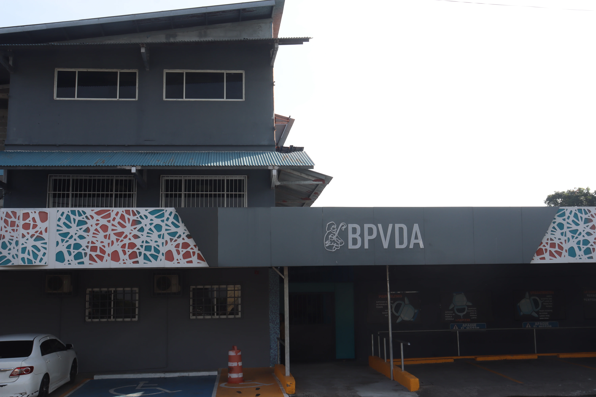
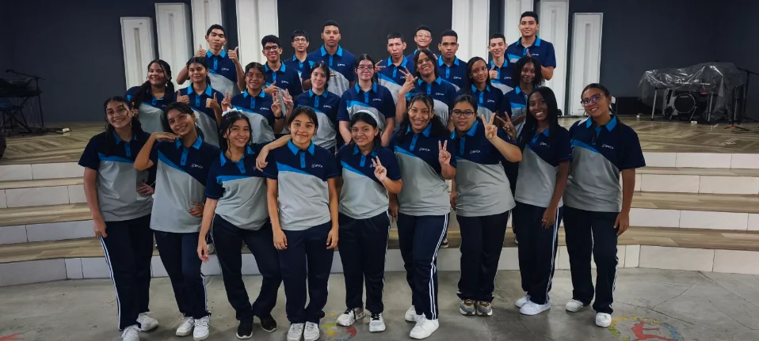
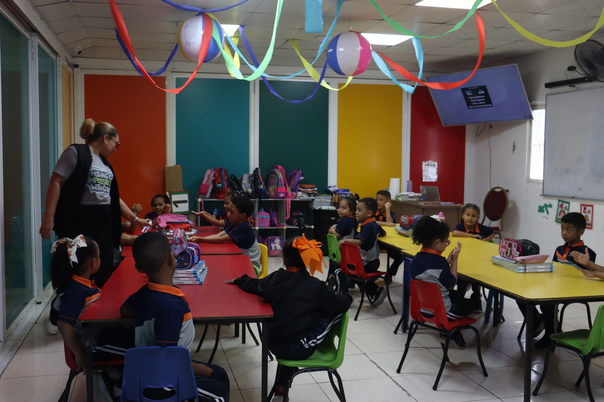

Una propuesta con propósito
Aquí se incorporará el contenido institucional final de ¿Quiénes somos?.

Conoce la historia, el compromiso y la comunidad que hacen posible BPVDA.
Conoce la historia, el compromiso y la comunidad que hacen posible BPVDA. En esta sección se añadirá la información institucional definitiva cuando sea aprobada.
Aquí se incorporará el contenido institucional final de ¿Quiénes somos?.
Este espacio está preparado para explicar los procesos, recursos y oportunidades de la comunidad BPVDA.
Familias, estudiantes y educadores construyen juntos cada etapa del aprendizaje.
Desliza o pasa el cursor para explorar una selección visual de nuestra comunidad.

Una experiencia que acompaña cada etapa.
Una experiencia que acompaña cada etapa.

Una experiencia que acompaña cada etapa.
Una experiencia que acompaña cada etapa.
Una experiencia que acompaña cada etapa.
Una experiencia que acompaña cada etapa.